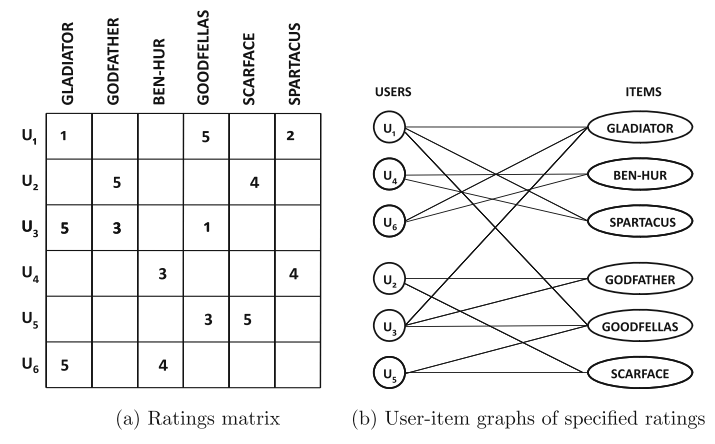
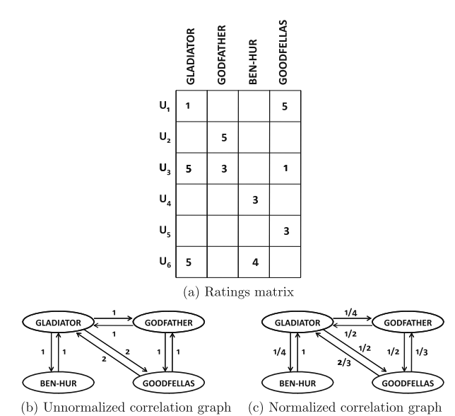
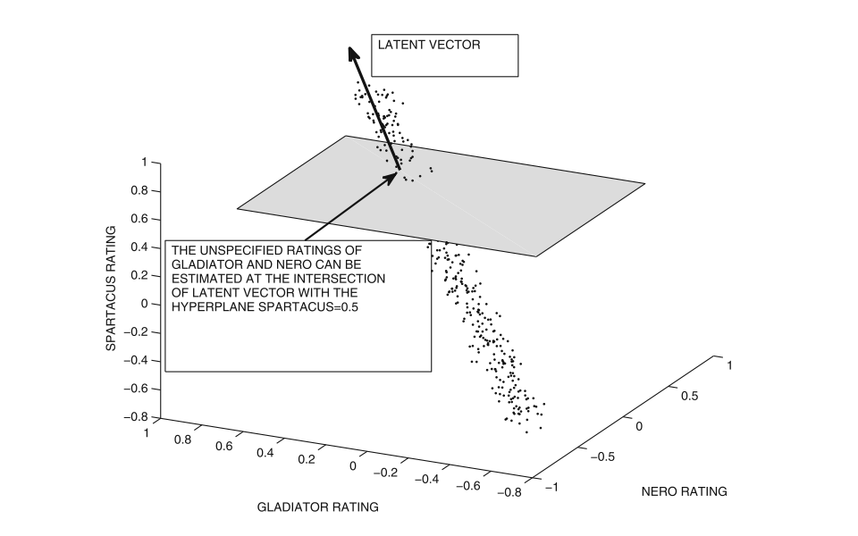
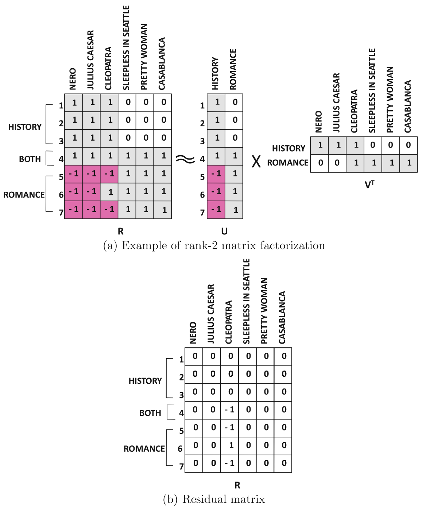
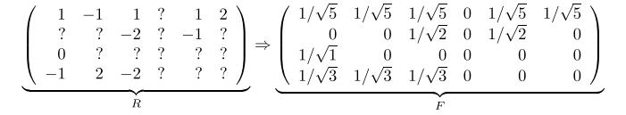
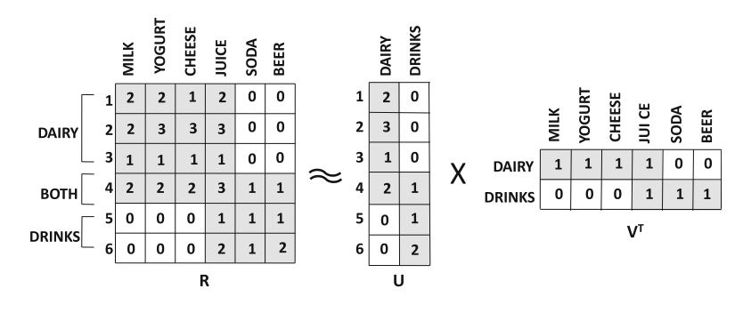

推荐系统简介
推荐系统核心思想就是根据用户和物料之间的行为数据进行推荐。
推荐系统简介
推荐系统目标
推荐系统可以看作是两种类型的问题:
- 预测问题
- 根据用户和物料的特征直接进行行为预测.也可以看作是用户-物料行为矩阵的缺失值补充问题.
- 排序问题
- 实际问题中,并不需要精确的预测用户对物料的行为才能进行推荐.可以将推荐看作是将 top-k 物料推荐给用户即可.可以看作是排序问题.
推荐系统的目标就是通过提高用户-物料之间交互行为,从而提高运营商收入.为了提高交互行为,推荐系统可行性或者叫做技术性目标为:
- 相关性(Relevance)
- 推荐的物料和用户感兴趣的物料如果具有较高相似性,那么用户肯定更容易进行交互行为.
- 新颖性(Nelty)
- 推荐系统如果能够通过用户感兴趣的物料来推荐用户过去没有见过的物料将会提高用户交换行为的可能.如果推荐的物料总是用户看到过的,那么用户会有审美疲劳感.
- 新奇性(Serendipity)
- 推荐系统如果能够根据用户的历史行为,挖掘出用户潜在的感兴趣物料.那么会给用户带来一定的惊喜,从而提高用户的满意度.
- 多样性(Diversity)
- 推荐系统推荐的 top-k 物料不能互相之间非常相似,这样会增加用户的反感.
推荐系统常用模型
- 协同过滤(Collaborative filtering)
- 通过用户-物料行为进行推荐
- 基于内容(Content-based)
- 通过用户和物料的属性特征进行推荐
- 基于知识(Knowledge-based)
- 通过用户通过交互提交自己感兴趣的物料筛选条件进行推荐
- 混合系统(Hybird)
- 混合采用多种推荐算法进行推荐
协同过滤 :: collaborative Filtering
协同过滤可以看作是通过 positive-unlabeled(/PU/) learning 对缺失值进行补全问题.
- 思想
- 协同过滤模型通过多个用户对物料的行为信息进行推荐.
- 挑战
- 用户-物料行为矩阵非常稀疏.
- 缺点
- 无法解决冷启动问题.
协同过滤模型可以细分为两种:
- 基于内存方法(Memory-based)
- 也叫基于近邻的协同过滤算法.又可以细分为两种近邻方法
- 基于用户协同过滤(User-based collaborative filtering)
- 主要思想相似用户的行为也相似.通过计算和用户最为相似的 top-k 用户,根据 top-k 用户的行为进行加权求和来进行预测.
- 基于物料协同过滤(Item-based collaborative filtering)
- 主要思想用户对相似物品的行为也相似.通过计算和物料最为相似的 top-k 个物料,根据用户对 top-k 的物料的行为进行加权求和进行预测.
- 基于模型方法(Model-based)
- 采用机器学习和数据挖掘的方法构建预测模型,然后采用该预测模型进行预测.
基于用户协同过滤
数学记号:
- \(R=[r_{ij}]\)
- 用户-物料行为矩阵
- \(I_{u}\)
- 用户 u 具有行为的物料集合
基于用户协同过滤首先需要计算相似度 top-k 的用户集合,然后根据相似用户对物料的行为来进行预测:
- 用户相似性度量
采用基于物料行为向量计算相似度的方法,首先因为不同用户的行为尺度不一,所以首先需要对行为进行去均值,来保证行为数据尺度一致,然后再计算相关性.
\begin{equation} \mu_{u} = \frac{\sum_{k \in I_{u}} r_{uk}}{\vert I_{u} \vert} \forall u \in {1...m} \end{equation}- Pearson 系数
- \begin{equation}
Sim(u,v) = Pearson(u,v) = \frac{\sum_{k \in I_{u} \cap I_{v}}(r_{uk}-\mu_{u}) \cdot (r_{vk}-\mu_{v})}{\sqrt{\sum_{k \in I_{u} \cap I_{v}}(r_{uk} - \mu_{u})^2} \cdot \sqrt{\sum_{k \in I_{u} \cap I_{v}}(r_{vk} - \mu_{v})^2}}
\end{equation}
严格讲: Pearson 系数中的均值 \(\mu_{u}\) 和 \(\mu_{v}\) 应该只用 \(I_{u} \cap I_{v}\) 中的元素计算.
但是为了提高计算效率,这里采用每个用户全局行为进行一次计算.
- top-k 用户行为预测
由于每个人都有自己的行为规则,所以行为具有不同的尺度,可以首先进行去中心化,然后根据 top-k 用户对物料的行为进行加权预测.
\begin{equation} s_{uj} = r_{uj} - \mu_{u} \forall u \in {1...m} \end{equation} \begin{align} \hat{r}_{[uj]} &= \mu_{u} + \frac{\sum_{v \in P_{u}(j)}Sim(u,v) \cdot s_{vj}}{\sum_{v \in P_{u}(j)}\vert Sim(u,v) \vert} \\ &= \mu_{u} + \frac{\sum_{v \in P_{u}(j)}Sim(u,v) \cdot (r_{vj}-\mu_{v})}{\sum_{v \in P_{u}(j)}\vert Sim(u,v) \vert} \end{align}
- 相似性函数变种
直接采用 \(\cos\) 函数作为相似性度量函数:
\begin{equation} RawCosine(u, v) = \frac{\sum_{k \in I_{u} \cap I_{v}}r_{uk} \cdot r_{vk}}{\sqrt{\sum_{k \in I_{u} \cap I_{v}}r_{uk}^{2}}\cdot\sqrt{\sum_{k \in I_{u} \cap I_{v}}r_{vk}^{2}}} \end{equation}在有些 \(\cos\) 实现中,归一化系数采用所有行为值,而不是两个用户都有行为:
\begin{equation} RawCosine(u, v) = \frac{\sum_{k \in I_{u} \cap I_{v}}r_{uk} \cdot r_{vk}}{\sqrt{\sum_{k \in I_{u} \cap I_{v}}r_{uk}^{2}}\cdot\sqrt{\sum_{k \in I_{u} \cap I_{v}}r_{vk}^{2}}} \end{equation}可以看到相似性函数依赖于两个用户具有共同行为的物料多少,可以对共同行为的物料较少的情况进行降权(significance weighting):
\begin{equation} DiscountedSim(u,v) = Sim(u,v) \cdot \frac{\min{(\vert I_{u} \in I_{v} \vert, \beta)}}{\beta} \end{equation} - 预测函数变种
除了采用去均值操作外,可以对行为值进行 z-score 归一化操作.
- 计算方差
- \begin{equation} \sigma_{u} = \sqrt{\frac{\sum_{j \in I_{u}}(r_{uj}-\mu_{u})^2}{\vert I_{u} \vert - 1}} \forall u \in {1...m} \end{equation}
- 行为值标准化
- \begin{equation} z_{uj} = \frac{r_{uj} - \mu_{u}}{\sigma_{u}} = \frac{s_{uj}}{\sigma_{u}} \end{equation}
- 预测行为值
- \begin{equation}
\hat{r}_{uj} = \mu_{u} + \sigma_{u} \frac{\sum_{v \in P_{u}(j)}{Sim(u,v) \cdot z_{vj}}}{\sum_{v \in P_{u}(j)}{\vert Sim(u,v) \vert}}
\end{equation}
\(P_{u}(j)\) 为与用户 u 相似度最高的且对物料 j 具有行为的 k 个用户集合.
额外,可以通过对相关性系数进行增强(amplify),来增大不同用户对预测结果的影响:
\begin{equation} Sim(u,v) = Pearson(u,v)^{\alpha} \end{equation} - 长尾效应 (long-tail)
在推荐系统中推荐物料有一个很有名的效应叫做长尾效应.具有大量行为的物料对用户相似度计算没有区分度.这种情况和自然语言处理中的一些出现频率极高的词对信息检索没有帮助是一个道理.自然语言处理中引入
Invert Document Frequency(idf)来降低频率极高的词对结果的影响.同理,在相似性计算的时候可以引入Inverse User Frequency.\(m_{j}\) 为对物料 j 具有行为的用户数量,m 为总用户数量,则物料 j 的权重 \(w_{j}\) 计算如下:
\begin{equation} w_{j} = \log{(\frac{m}{m_{j}})} \forall j \in {1...n} \end{equation}在计算相似性和预测阶段,都可以使用 wj 对物料进行加权,例如在 Person 系数中:
\begin{equation} Person(u,v) = \frac{\sum_{k \in I_{u} \cap I_{v}} w_{k} \cdot (r_{uk} - \mu_{u}) \cdot (r_{vk} - \mu_{v})}{\sqrt{\sum_{k \in I_{u} \cap I_{v}}w_{k}\cdot(r_{uk}-\mu_{u})^2}\cdot\sqrt{\sum_{k \in I_{u} \cap I_{v}}w_{k}\cdot(r_{vk}-\mu_{v})^2}} \end{equation}
基于物料协同过滤
基于物料的协同过滤模型,计算相似物料,然后根据用户对相似物料的行为来预估目标物料的行为.
在计算相似性之前,首先需要对用户行为进行去均值化.相似度量函数如下:
\begin{equation} AdjustedCosine(i,j) = \frac{\sum_{u \in U_{i} \cap U_{j}}s_{ui} \cdot s_{uj}}{\sqrt{\sum_{u \in U_{i} \cap U_{j}} s_{ui}^{2}}\cdot\sqrt{\sum_{u \in U_{i} \cap U_{j}} s_{uj}^{2}}} \end{equation}上述相似性度量函数因为需要先进行去行均值化操作,所以叫 adjusted cosine.该方法要比 person 要好.
然后根据上述相似性函数度量的结果选取 topk 的物料进行预估:
\begin{equation} \hat{ut} = \frac{\sum_{j \in Q_{t}(u)}AdjustedCosine(j,t)*r_{uj}}{\sum_{j \in Q_{t}(u)} \vert AdjustedCosine(j,t) \vert} \end{equation}基于用户和基于物料的协同过滤算法对比和总结
- 对比
基于物料的协同过滤算法因为是利用用户对自己其他相似的物料的行为来预测,所以一般要比基于用户的协同过滤算法准确一些.并且在用户多于物料的情况下,基于物料的协同过滤算法更为稳定,因为相似物料度量可以参考大量用户的行为,更为精准;基于用户的协同过滤参考的物料信息交集较少,会被少数的行为影响.
反过来说给予用户的协同过滤算法的推荐多样性要好于基于物料的系统过滤算法.
基于物料的协同过滤不需要在每次增加新用户都进行重新的计算,并且一般新用户的增加频率要大于新物料的增加.所以基于物料的协同过滤算法要比基于用户的协同过滤算法更为有效和稳定.
- 基于紧邻的协同过滤算法的优点和缺点
基于紧邻的协同过滤算法简单和直观,所以较为容易实现和检查正确性.
主要的缺点是计算量大,近似计算常常需要 \(O(m^2)\) 的时间和空间;次要缺点是行为矩阵一般比较稀疏,所以相似性计算结果不够健壮.
- 统一基于用户和基于物料的协同过滤算法
基于用户和基于物料的协同过滤算法缺点分别是因为在计算用户相似性忽略了物料之间的相似性;计算物料相似性的时候忽略了用户相似性.所以可以通过计算相似性的时候同时考量用户相似性和物料相似性提高性能.
为了达到统一两种协同过滤算法,首先需要明白两种协同过滤算法基本是相同的,除了用户的行为得分需要去均值,并且一旦去均值化后 Person 系数和 Cosine 系数是相同的.基于这些前提,基于用户和基于物料的方法可以采用如下统一方法来描述预测过程:
- 对于预测目标 \((u,j)\),采用 cosine 来计算出最为相似的用户和物料,然后根据一个结合函数来决定最为相似的用户和物料.例如:采用物料相似度加上用户相似度来决定最为相似的用户-物料对.
- 采用第一步中获得的结合函数计算的相似度作加权预测获得预测值.
聚类在基于领域的方法中应用
基于领域的方法主要的问题是离线相似性计算过程太复杂.假设用户量为 m,那么基于用户的协同过滤算法的计算复杂度为 \(O(m^2 \cdot n^{'})\).
为了克服上述计算量大的问题,主要思想是采用聚类模型来替代紧邻计算过程.通过聚类将行为相似的用户聚成多个簇,然后在各个簇内计算 topk 相似用户.这样将相似性度量的 \(O(n^2)\) 计算复杂度局限在较小规模的簇内执行.
降维在基于领域的方法中应用
降维方法可以同时提高基于紧邻的方法的性能和效果的提升.特别是在行为矩阵较为稀疏的话,成对相似性计算非常难以保证计算的健壮性.降维方法通过隐因子模型(latent factor models)来将高维稀疏行为矩阵转为低维稠密矩阵.即使两个用户只有非常少的公共行为,在低维稠密矩阵表示下也可以计算出距离.
降维方法一般分为: 1. 对列或者对行进行降维; 2. 同时对行列进行降维,并可以通过降维矩阵还原出原始矩阵,这种降维方法可以看作是基于模型的协同过滤的一种实现方法.
这里先讨论第一种降维方法,在基于用户的协同过滤算法中基础思想是将 \([m,n]\) 矩阵 \(R\) 通过主成份分析方法降维到 \([m,d]\),其中 \(d \ll n\).
SVD-like 降维
首先需要确定缺失矩阵 R 的补充值问题.两种方法:
- 用户行为均值,行均值填充
- 物料行为均值,列均值填充
设填充后的矩阵为 \(R_{f}\),那么物料相似矩阵[n,n]为 \(S=R_{f}^{T}R_{f}\).该矩阵为对称且半正定矩阵,执行对角化:
\begin{equation} S = P \Delta P^{T} \end{equation}其中: P 为 S 的特征向量矩阵,每一列为一个特征向量. \(\Delta\) 为对角矩阵,且为 S 的特征值.
\(P_{d}\) 为前 d 大的特征值对应的特征向量构成的矩阵[n,d],则 \(R_{f}\) 的低维表示只需要直接执行矩阵乘 \(R_{f}P_{d}\),得到低维[m,d]表达矩阵.
上述对缺失矩阵 R 进行补全，不管是采用何种方式都会来带偏执(bias).
- 偏执问题
假设有如下行为矩阵:
Table 1: 在进行相似性计算时，不管什么方式补全矩阵，都会带来一定的偏执. User Index Godfather Gladiator Nero 1 1 1 1 2 7 7 7 3 3 1 1 4 5 7 7 5 3 1 ? 6 5 7 ? 7 3 1 ? 8 5 7 ? 9 3 1 ? 10 5 7 ? 11 3 1 ? 12 5 7 ? 假设采用列均值来对矩阵进行补全,可以看到在不进行补全前电影 Gladiator 和 Nero 的协方差非常高，因为前四个用户的评分一致。但是如果采用列均值进行补全时,/Nero/ 的均值为 (1+7+1+7)/4=4,这些未有行为的都被补为 4.这些补全的数据会显著的降低 Gladiator 和 Nero 的协方差.但是这些补全的值对 Godfther 和 Gladiator 没有影响.从而使得 Gladiator 和 Nero 的协方差小于 Godfather 和 Gladiator 的协方差.
在稀疏矩阵中,这种偏执尤其会影响推荐效果.如下有两种方法来解决这种问题.
- 最大似然评估
有一些重构方法提出基于概率的方法,例如 EM 算法去估计协方差矩阵.在构建概率生成模型的同时直接计算出对应的协方差矩阵.
最简单的方法是计算协方差值的时候,之采用具有行为的对象.
在进行 PCA 降维时,可以采用原始矩阵 R 通过矩阵 \(P_{d}\) 进行降维映射,而不采用补全的矩阵 \(R_{f}\) 进行映射.
- 矩阵因子分解
采用矩阵因子分解方法(SVD)对缺失矩阵进行分解,然后重构原始矩阵.
对于行为矩阵 [m,n] R 可以利用 SVD 直接进行分解:
\begin{equation} R = Q \Sigma P^{T} \end{equation}Q 为 [m,m] 矩阵,其中列为矩阵 \(RR^{T}\) 的特征向量.矩阵 P 为 [n,n] 矩阵,其中列为矩阵 \(R^{T}R\) 的特征向量. \(\Sigma\) 为 [m,n] 对角阵,为矩阵 \(R^{T}R\) 和 \(RR^{T}\) 的特征值的开方.
可以采用 truncatedSVD 来近似对矩阵进行分解,即只保留 d 个最大的特征值对应的特征向量来构建行为矩阵:
\begin{equation} R \approx Q_{d} \Sigma_{d} P_{d}^{T} \end{equation}可以看到 \(P_{d}\) 为 PCA 降维的映射矩阵, \(Q_{d}\Sigma_{d}\) 为 PCA 降维后的矩阵.所以可以看到上式将降维后的矩阵映射回原始矩阵.
SVD 分解方法带来的一个问题就是原始的行为矩阵必须是补全矩阵.可以采用上述的公式,然后采用非线性优化方法来进行参数评估即可.
基于近邻的方法与回归模型关系
关于基于近邻的方法的一个重要观察是: 1,基于用户的协同过滤方法可以看作是相邻用户对相同物料行为的线性函数;2,基于物料的协同过滤方法可以看作是同一个用户对相邻物料行为的线性函数.
基于上述观点,可以将预估函数改写成如下:
\begin{equation} \hat{r}_{uj} = \mu_{u} + \frac{\sum_{v \in P_{u}(j)}Sim(u,v) \cdot (r_{vj} - \mu_{v})}{\sum_{v \in P_{u}(j)}\vert Sim(u,v) \vert } \end{equation}可以看到预估的值为相同其他用户对相同物料的行为的加权线性组合.只是上述的加权值是启发式的,采用用户之间的相似性来进行加权.所以,也可以采用优化方法来对这些加权值进行求解.3
- 基于用户近邻的回归模型
可以将上述公式中的相似系数替换成优化参数 \(w_{vu}^{user}\):
\begin{equation} \hat{r}_{uj} = \mu_u + \sum_{v \in P_{u}(j)} w_{vu}^{user} \cdot (r_{vj} - \mu_{v}) \end{equation}其中,\(P_{u}(j)\) 在近邻模型中是通过 person 系数来提前定义的.因此大小一定是 k 的.在归回模型中, \(P_{u}(j)\) 是提前决定的,然后保留下具有共同行为的用户,所以一般会小于 k.
基于模型的回归模型额外需要定义一个损失函数,来指导模型参数的预估.一般采用均方方差.
- 稀疏和偏执问题
上述回归模型的一个问题是 \(P_{u}(j)\) 包含的用户数量不定.例如:目标用户 u 对物料 \(Gladiator\) 和 \(Nero\) 具有行为,目标用户 u 的最近临用户中只有 1 个用户对 \(Gladiator\) 具有行为,k 个用户对 \(Nero\) 具有行为.那么归回系数 \(w_{uv}^{user}\) 将会严重的被 \(Gladiator\) 具有行为的用户影响.会带来严重的过拟合问题.
基本思想是改变预测函数,对于物料 j 预估回归值只影响一部分 \(\frac{\vert P_{u}(j) \vert}{k}\).
\begin{equation} \hat{r}_{uj} \cdot \frac{\vert P_{u}(j) \vert}{k} = \mu_{u} + \sum_{v \in P_{u}(j)}{w_{vu}^{user} \cdot (r_{vj}-\mu_{v})} \end{equation}其他启发式的调整也可以使用,例如在书4中采用调整系数 \(\sqrt{\vert P_{u}(j)\vert/k}\).由于 k 为公共参数,所以可以直接简化为 \(\sqrt{\vert P_{u}(j) \vert}\).一个相关的提升是将常量偏移 \(\mu_{u}\) 替换成一个偏移变量 \(b_{u}\),该参数参与优化.对应的预估函数为:
\begin{equation} \hat{r}_{uj} = b_{u}^{user} + \frac{\sum_{v \in P_{u}(j)} w_{vu}^{user} \cdot (r_{vj}-b_{v}^{user})}{\sqrt{\vert P_{u}(j) \vert}} \end{equation}额外的还可以添加物料侧的偏移项:
\begin{equation} \hat{r}_{uj} = b_{u}^{user} + b_{j}^{item} + \frac{\sum_{v \in P_{u}(j)} w_{vu}^{user} \cdot (r_{vj} - b_{v}^{user} - b_{j}^{item})}{\sqrt{\vert P_{u}(j) \vert}} \end{equation}此外,推荐对行为矩阵进行全局均值化,然后预估时加回去.
- 稀疏和偏执问题
- 基于物料近邻的回归模型
基于物料近邻的方法和基于用户近邻的方法非常相似.同样,可以将预估函数中的相似系数 AdjustedCosine 替换成可学习的参数 \(w_{jt}^{item}\),公式如下:
\begin{equation} \hat{ut} = \sum_{j \in Q_{t}(u)}{w_{jt}^{item} \cdot r_{uj}} \end{equation}\(Q_{t}(u)\) 最近临集合可以采用 AdjustedCosine 来选取.
其他实现和基于用户近邻的回归模型类似.
- 统一回归模型
可以在统一的回归框架下结合上述两种归回模型4.因此,预估结果同时基于相似用户和相似物料,预估函数如下:
\begin{equation} \hat{uj} = b_{u}^{user} + b_{j}^{item} + \frac{\sum_{v \in P_{u}(j)} w_{vu}^{user} \cdot (r_{vj}- B_{vj})}{\sqrt{\vert P_{u}(j) \vert }} + \frac{\sum_{i \in Q_{j}(u)} w_{ij}^{item} \cdot (r_{ui}- B_{ui})}{\sqrt{\vert Q_{j}(u) \vert }} \end{equation} - 相似加权联合插值
在5中提出了不同的统一回归模型.基础思想是在采用基于用户的回归模型来预测用户 u 的行为,然后不是用观察到的物料的行为来进行对比,而是采用该用户在其他物料上的行为进行比较.
假设 S 为行为矩阵中所有的用户-物料对集合:
\begin{equation} S = \{(u,t): r_{ut}\ is\ observed\} \end{equation}损失函数如下:
\begin{align} Minimize \sum_{s:(u,s) \in S} \sum_{j:j \neq s} AdjustedCosine(j,s) \cdot (r_{us}-\hat{r}_{uj})^2 \\ = \sum_{s:(u,s) \in S} \sum_{j:j \neq s} AdjustedCosine(j,s) \cdot (r_{us} - [ \,\mu_{u} + \sum_{v \in P_{u}(j)}w_{vu}^{user}\cdot(r_{vj}-\mu_{v})] \,)^2 \end{align}看到 Adjusted Cosine 作为损失的系数,从而强迫用户对相似物料的行为也相似.可以看到上述损失函数中同时用到了用户和物料相似函数,但是是不同的方式:
- 物料相似度用来作为损失函数系数,从而保证用户对相似物料具有相似行为.
- 用户相似度用来预测行为得分.
- 稀疏线性模型 - Sparse Linear Models (SLIM)
基于物料的回归模型,论文6提出了稀疏线性模型族(sparse linear models).该模型通过引入正则化方法来增加模型的稀疏性.该模型只能处理行为是非负的情况.所以,行为矩阵中的没有行为的物料可以直接补全为 0.
不像之前的近邻回归方法限制回归系数为近邻的.SLIM 中预估函数如下:
\begin{equation} \hat{r}_{ut} = \sum_{j=1}^{n} w_{jt}^{item} \cdot r_{uj} \forall u \in {1...m}, \forall t \in {1...n} \end{equation}需要注意是的,右侧需要设置 \(w_{tt}^{item}=0\) 来防止模型过拟合. \(W^{item}=[w_{jt}^{item}]\) 表示是物料相似回归矩阵.因此,假设矩阵 \(W^{item}\) 的对角元素限制为 0,那么上述的预测可以用如下矩阵表示:
\begin{equation} \hat{R} = RW^{item} \\ Diagonal(W^{item}) = 0 \end{equation}因此,主要的优化目标是最小化 Frobenius norm \(\|R-RW^{item} \|^2\).对于物料 t,损失函数如下:
\begin{align} \min_{w} \quad J_{t}^{s} &= \sum_{u=1}^{m}(r_{ut}-\hat{r}_{ut})^2 + \lambda \cdot \sum_{j=1}^{n}(w_{jt}^{item})^2 + \lambda_{1} \cdot \sum_{j=1}^{n}\vert w_{jt}^{item}\vert \\ &= \sum_{u=1}^{m}(r_{ut}-\sum_{j=1}^{n}w_{jt}^{item} \cdot r_{uj})^2 + \lambda \cdot \sum_{j=1}^{n}(w_{jt}^{item})^2 + \lambda_{1} \cdot \sum_{j=1}^{n}\vert w_{jt}^{item}\vert \\ \mathrm{s.t.} \\ w_{jt}^{item} & \geq 0 \forall j \in {1...n} \\ w_{tt}^{item} & = 0 \end{align}上述损失中最后两项分别为 L2-和 L1-正则,合起来叫做 elastic-net regularizer.L1-正则用来增加系数稀疏性,稀疏性确保预测的行为结果是由其他一部分具有相关性物料的线性组合,保证了结果具有较好的可解释性.
图模型在基于近邻模型中应用
行为矩阵的稀疏性在基于近邻模型中近似计算中带来了很大的挑战,图模型可以用来计算相似性.图能够提供用户或物料之间结构化表示,从而实现多种推荐模型.
- 用户-物料图模型
可以在用户-物料图上的结构传递性来定义近邻,从而替代 Person 相关性系数,应对行为矩阵的稀疏问题.
用户-物料图采用单向二部图 \(G=(N_{u} \cup N_{i}, A)\) 定义, \(N_{u}\) 为用户节点集合, \(N_{i}\) 为物料节点集合.图中的边只存在与用户和物料之间. \(A\) 为边的集合.

Figure 1: 行为矩阵和对应的用户-物料图表示
例如,上图中表示的就是行为矩阵和对应的用户-物料图表示.基于图的主要优点是两个用户不需要有很多相同的物料行为,只需要具有较短的路径能把两个用户联系在一起就可以计算相似性.也就是说可以通过两个节点的间接连接(indirect connectivity)来定义近邻.
间接连接通过基于路径(path-based)或者基于游走(walk-based)的方法来定义.
- 随即游走(random walk)定义近邻
用户的近邻定义为以该用户作为起点,然后在二部图上随机游走时高频次碰到的用户集合.随机游走(random-walk)方法主要应用在搜索排序中,可以采用搜索中经典的 PageRank 或者 SimRank 方法来获取 tok 用户.
- Katz Measure 定义近邻
除了采用概率度量方法(例如随机游走),也可以采用加权游走来定义近邻.每次游走时,权值都进行衰减,这种两个节点之间加权步数叫做 Katz Measure.
\begin{equation} Katz(i,j) = \sum_{t=1}^{\infty} \beta^{t} \cdot n_{ij}^{(t)} \end{equation}定义 Katz Measure设 \(n_{ij}^{(t)}\) 为节点 i 和节点 j 之间步长为 t 的路径数量.用户定义衰减系数 \(\beta < 1\), Katz 度量如下:
设 K 为 [m,m] 的用户之间的 Katz 系数矩阵.A 为二部图对称邻接矩阵.则 Katz 系数矩阵 K 计算过程如下:
\begin{equation} K = \sum_{i=1}^{\infty}(\beta A)^{i} = (I-\beta A)^{-1} - I \end{equation}\(\beta\) 需要比矩阵 A 的最大特征值的倒数小就可以保证上述的无穷公式收敛.
一旦计算出 K 矩阵,就可以选取每个用户的 topk 用户作为近邻,从而预估行为.
- 随即游走(random walk)定义近邻
- 用户-用户图模型
在用户-物料图模型中,用户-用户的关联关系通过在用户-物料二部图中奇数跳跃来确定.除了上述方法,可以直接采用 2 级跳跃来创建用户-用户图.用户-用户图中的边通过考虑两个用户和物料之间的关系(数量/权值等)携带更多的信息.
用户-用户图构建如下:
- 图中的节点 u 对应[m,n]用户-物料矩阵中的 m 用户中的一个.\(I_{u}\) 为用户 u 具有行为的物料集合,\(I_{v}\) 为用户 v 具有行为的物料集合.
- 图中的边创建的方法叫做 horting. horting 是一种用户和用户之间非对称关系,主要依赖于两个用户具有行为的相似物料.
\begin{equation} \vert I_{u} \cap I_{v} \vert \geq F \\ \vert I_{u} \cap I_{v} \vert / \vert I_{u} \vert \geq G \end{equation}定义 Horting如果如下条件中的任意一条满足,就可以说用户 u hort 用户 v 的关系为 (F,G):
F 和 G 为算法参数.
\begin{equation} \frac{\sum_{k \in I_{u} \cap I_{v}}\vert r_{uk} - f(r_{vk}) \vert}{\vert I_{u} \cap I_{v} \vert} \leq U \end{equation}定义 Predicatability如果用户 u hort 用户 v,并且存在一个线性变换函数 \(f(\cdot)\) 满足如下条件,则可以称用户 v predict 用户 u:
如果用户-用户图中每一条边都满足上述的线性变换约束,则该图为 user-user predictability graph.线性变换定义了预估的方式,在用户链中可以通过链头用户的行为预估链尾用户的行为.用户 u 对物料 k 的行为可以通过所有距离 u 最短路径上对物料 k 具有行为的用户来预测.
例如: 假设一个长度为 r 的用户 u 到用户 r 的有向路径.设 \(f_{1},...,f_{r}\) 表示用户 u 到用户的有向路径上的线性变换函数.则用户 u 对物料 k 的预估行为值 \(\hat{r}_{uk}^{v}\) 可以应用 r 个线性变换来获得:
\begin{equation} \hat{r}_{uk}^{v} = (f_{1} \circ f_{2} \circ ... \circ f_{r})(r_{vk}) \end{equation}最终的预估得分对所有满足条件的用户 v 进行加权平均即可.
更多 horting 方法可以参考7.
- 物料-物料图
同理,也可以构造物料-物料图来进行推荐,该带权值的有向图也叫做 correlation graph.如果物料 i 和物料 j 具有一个共同用户,那么在物料-物料图中有向边(i,j)和(j,i)存在.
设 \(U_{i}\) 为对物料 i 具有行为的用户集合, \(U_{j}\) 为对物料 j 具有行为的用户集合.权值计算如下:
- 初始化权值 wi,j 为 \(\vert U_{i} \cap U_{j} \vert\).初始化时权值矩阵为对称矩阵.
对权值进行归一化,即一个节点的所有出度的边的和为 1.该归一化操作后,权值矩阵将不再是对称矩阵.该权值分布对应于随即游走的概率.具体参考下图.

Figure 2: 行为矩阵和对应的相关性图
可以看到上述构建没有考虑行为得分,也可以用其他方式构造相关性图.例如:采用两个物料的行为向量的 cosine 值.
在物料-物料图构建完成后,就可以确定近邻集合,然后进行行为预估.也可以采用 PageRank 直接计算推荐得分,叫做 ItemRank.
基于模型的协同过滤 :: Model-Based Collaborative Filtering
基于近邻的方法可以看作是 k-nearest neighbor classifiers.
基于模型的方法是先根据数据学习到一个模型,然后使用该模型进行预测.
基于模型的方法要比基于近邻的方法的优势是:
- 占用空间更少
- 一般模型的空间要小于最开始的行为矩阵.
- 训练速度和预测速度
- 模型的训练速度要比近邻方法中相似性计算快,并且预测速度也要比近邻方法快.
- 过拟合
- 基于模型的方法可以很容易的引入正则化等一系列方法来抑制过拟合问题.
分类和回归决策树
决策树通过递归的对数据空间进行分片,最后对分片数据进行预测的算法.对数据进行分片的时候,依赖于切分标准(split criteria),基本准则是切分后的数据里数据更为纯粹.
分片纯粹程度可以采用加权 Gini index 来度量.假设切分后的某个子树中不同分类的比例为 \(p_{1}...p_{r}\),那么该子树的 Gini Index 计算公式如下:
\begin{equation} G(S) = 1 - \sum_{i=1}^{r} p_{i}^{2} \end{equation}Gini Index 值在 0-1 之间,较小的值表示该子树更为纯粹.那么决定采用哪个特征进行切分时,需要综合考虑切分后形成的所有子树的 Gini Index.例如切分后有两个子树 \(S_{1}\) 和 \(S_{2}\),n1 和 n2 为两个子树包含的样本个数,则该分片的 Gini Index 计算公式如下:
\begin{equation} Gini(S \Rightarrow [S_1,S_2]) = \frac{n_{1} \cdot G(S_{1}) + n_{2} \cdot G(S_{2}}{n_{1}+n_{2}} \end{equation}通过上述公式来选择每次切分采用的特征对象.可以切分到子树只包含某一类的样本时候,或者将所有特征都切分完成后停止,然后该叶节点用样本中分类最多的分类作为该叶节点分类.
回归树中,切分标准不再采用 Gini Index,而是采用方差来选择切分特征.那么叶节点可以采用均值来预测回归,也可以采用线性模型来预测.
- 扩展决策树到协同过滤
决策树无法直接应用在协同过滤中,因为:1.没有明显的特征和标签的区分;2.推荐场景下的行为矩阵非常稀疏.
第一个问题很好解决,可以构建多个决策树,假设行为矩阵为 [m,n],那么构造 n 个决策树,每个决策树将对应物料当作目标,其他物料当成特征即可.
第二个问题就不太好解决.考虑在根据某个物料进行分片的时候,由于行为矩阵非常稀疏,那么这些没有行为的样本应该分到哪一个分片呢?理论上是分到所有子树去,但是这样的话,大量的样本具有很多条路径,那么最终进行预测时候会有很多得分,如何合并呢?
更为合理的方法是将高维稀疏的行为矩阵映射到到低维稠密矩阵.具体做法是如果预测 jth 物料,首先去掉物料 j 的行为列,构建[m,n-1]行为矩阵.然后将该行为矩阵映射到低维矩阵(例如:svd 或者 pca).然后进行预测即可.决策树需要保存下特征值和特征向量.
基于规则的协同过滤
关联规则(association rules)和协同过滤算法非常相似,因为关联规则第一次提出来就是为了分析超市商品之间的关系的.
假设有一个交易数据库 \(T = \{\tau_{1}...\tau_{m}\}\),包含 n 个商品的 m 条交易记录. \(I\) 为商品集,则每个交易 \(\tau_{i}\) 中包含的商品都是 \(I\) 的子集.关联规则主要是挖掘出商品之间的关联关系.主要是定义两种描述值:支持度 support 和 置信度 confidence.
定义 支持度一个商品子集 \(X \subseteq I\) 的支持度为在交易数据库中包含商品子集 \(X\) 的比例.
并且定义一个支持度的阈值 s,超过该阈值的商品子集定义为频繁子集.
定义 置信度置信度为包含商品 X 后,又包含商品 Y 的条件概率.计算为同时包含商品 \(X \cup Y\) 的支持度除以 \(X\) 的支持度.
基于以上定义,可以知道如果支持度满足阈值,并且对应的置信度满足阈值,那么就可以给出关联规则 \(X \Rightarrow Y\) 为真,表示购买了 X 商品集的客户通常也会买 Y 商品集.
定义 关联规则 满足如下两个条件的规则 \(X \Rightarrow Y\) 为满足最小支持度为 s,最小置信度为 c 的关联规则:
- \(X \cup Y\) 的支持度至少为 s.
- \(X \Rightarrow Y\) 的置信度至少为 c.
从数据集中找到关联规则的算法分两阶段.第一阶段,计算满足最小支持阈值 s 的商品集合.从这些集合中分裂成两个集合 \((X,Z-X)\) 创建关联规则 \(X \Rightarrow Z-X\).保留满足最小置信度的规则.
- 应用关联规则到协同过滤
首先,对于单值行为矩阵(购买)中缺失值进行补 0,虽然补 0 在很多行为矩阵中都会带来一定的偏执,但是对于单值行为矩阵带来的偏执较少.这样行为矩阵可以看作为补全行为矩阵.
第一步是挖掘出满足支持度和置信度阈值的规则.这两个阈值可以看作是两个超参,用来最大化预测准确率.并且在构建关联规则时,只保留 Y 为单个物料的规则.这些规则就是模型,用来对满足 X 的用户推荐 Y 物料.对于用户找到用户满足 X 的所有规则,然后按照置信度选取 topk 物料进行推荐.
上述方法只能处理单值行为矩阵.对于多值的行为矩阵可以将物料-行为得分当作一个虚拟的物料,例如(物料=面包,行为=不喜欢).在新的虚拟的物料集上进行上述算法即可.
朴素贝叶斯协同过滤
假设行为矩阵的得分只有较少数量的不同得分,这些得分看作是不同种类的得分,之间没有序列关系.例如:喜欢,中立,不喜欢.
假设有 l 个行为的得分 \(\nu_{1}...\nu_{l}\).
朴素贝叶斯模型是一个生成模型,主要用来进行分类.可以将物料作为特征,用户作为样例,采用分类模型对缺失行为进行预测.主要的挑战是任意的特征(物料)都可以时协同过滤中的目标.并且特征变量是不完整的.这些问题可以通过对朴素贝叶斯模型进行微调来处理.
考虑 /u/th 用户具有行为的物料集为 \(I_{u}\).那么贝叶斯分类器需要预测用户 u 对物料 j 的未知行为 \(r_{uj}\).可以知道 \(r_{uj}\) 为离散目标值中的一个 \({\nu_{1}...\nu_{l}}\).因此,需要计算出用户具有 \(I_{u}\) 的行为后,\(r_{uj}\) 为这些离散值的条件概率 \(P(r_{uj}=\nu_{s}\vert Observed\ ratings\ in\ I_{u})\).
贝叶斯概率公式:
\begin{equation} P(A \vert B) = \frac{P(A) \cdot P(B \vert A)}{P(B)} \end{equation}因此,对于目标值 \(s \in \{1...l\}\),条件概率为:
\begin{equation} P(r_{uj}=\nu_{s} \vert Observed\ ratings\ in\ I_{u}) = \frac{P(r_{uj}=\nu_{s}) \cdot P(Observed\ ratings\ in\ I_{u} \vert r_{uj} = \nu_{s})}{P(Observed\ ratings\ in\ I_{u})} \end{equation}可以看到公式右边的分母和目标值 s 无关的值,如果只是需要求取最大概率值,公式如下:
\begin{equation} P(r_{uj} = \nu_s \vert Observed\ ratings\ in\ I_{u}) \propto P(r_{uj} = \nu_{s}) \cdot P(Observed\ ratings\ in\ I_{u} \vert r_{uj} = \nu_{s}) \end{equation}\(P(r_{uj}=\nu_s)\) 为 \(r_{uj}\) 的先验概率,为所有用户对物料 j 具有行为 \(\nu_{s}\) 的比例.朴素贝叶斯指的就是在计算 \(P(Observed ratings in I_{u} \vert r_{uj} = \nu_{s})\) 假设用户在不同物料上的行为时条件独立的.具体表示如下:
\begin{equation} P(Observed\ ratings\ in\ I_{u} \vert r_{uj} = \nu_{s}) = \prod_{k \in I_{u}}P(r_{uk} \vert r_{uj} = \nu_s) \end{equation}所以最终的后验概率计算公式如下:
\begin{equation} P(r_{uj} = \nu_s \vert Observed\ ratings\ in\ I_{u}) \propto P(r_{uj} = \nu_{s}) \cdot \prod_{k \in I_{u}}P(r_{uk} \vert r_{uj} = \nu_s) \end{equation}\(r_{uj}\) 后验概率可以通过如下两个方式来预测 \(\hat{r}_{uj}\):
可以对于每一个 \(s \in \{1...l\}\),计算上述公式,然后取最大后验概率的 s 作为预测结果,公式如下
\begin{align} \hat{r}_{uj} &= \arg\max_{\nu_{s}} P(r_{uj} = \nu_{s} \vert Observed\ ratings\ in\ I_{u}) \\ &= \arg\max_{\nu_{s}} P(r_{uj} = \nu_{s}) \cdot \prod_{k \in I_{u}} P(r_{uk} \vert r_{uj} = \nu_{s}) \end{align}这种方法将行为得分当成分类值并且忽略掉行为得分的序列.当行为得分种类较少是一个可行的方法.
可以采用后验概率对预估得分加权平均作为预估结果.公式如下:
\begin{align} \hat{r}_{uj} &= \frac{\sum_{s=1}^{l}\nu_{s} \cdot P(r_{uj}=\nu_{s} \vert Observed\ ratings\ in\ I_{u})}{\sum_{s=1}^{l} P(r_{uj}=\nu_{s} \vert Observed\ ratings\ in\ I_{u})} \\ &= \frac{\sum_{s=1}^{l}\nu_{s} \cdot P(Observed\ ratings\ in\ I_{u} \vert r_{uj}=\nu_{s})}{\sum_{s=1}^{l} P(Observed\ ratings\ in\ I_{u}) \vert r_{uj}=\nu_{s})} \\ &= \frac{\sum_{s=1}^{l}\nu_{s} \cdot \prod_{k \in I_{u}} P(r_{uk} \vert r_{uj} = \nu_{s})}{P(r_{uk} \vert r_{uj} = \nu_{s})} \\ \end{align}
可以看到基于条件概率的贝叶斯是基于物料的方法.
- 抑制过拟合
当行为矩阵非常稀疏的时候,贝叶斯这种统计概率的方法将变得容易过拟合.例如,先验概率 \(P(r_{uj}=\nu_s)\) 在 jth 物料行为比较少的时候,概率将不可信,或者直接没有行为的话会出现 0/0 的情况.
为了处理上述稀疏矩阵带来的统计概率不准的情况,通常情况下可以引入拉普拉斯平滑(Laplacian smoothing).
例如:设 \(q_1,...,q_l\) 为分别对 jth 物料有对应行为 \(\nu_1,...,\nu_l\) 的用户数量.在估计先验 \(P(r_{uj}=v_{s})\) 的时候不直接采用 \(q_{s}/\sum_{t=1}^{l}q_{l}\),而是采用如下公式(\(\alpha 为平滑参数\)):
\begin{equation} P(r_{uj}=\nu_s)=\frac{q_{s}+\alpha}{\sum_{t=1}^{l}q_{t}+l \cdot \alpha} \end{equation}如果对于 jth 物料没有用户具有行为的话,那么采用上述方法会将先验概率设置为均分概率 1/l.参数 \(\alpha\) 控制的平滑程度.
潜在因子模型 :: Latent Factor Models
前面在SVD-like 降维说明了降维技巧在协同过滤算法中的应用.基本用于将缺失矩阵降到低维稠密矩阵,为后续算法提供一个更为容易处理的数据集,可以看作是一种数据预处理方法.
其实,降维方法可以直接一次就完成行为矩阵的预测.降维方法应用在协同过滤的基础思想是:
矩阵行列之间具有高度相关性,矩阵中的数据具有内在的冗余,所以矩阵可以采用低秩(low-rank)矩阵很好近似出来.这些低维满秩矩阵可以很好的预估出原始矩阵中缺失值.
潜在因子模型基本是协同过滤中最好(state-of-the-art)的模型.这些模型基本都利用了降维方法来对缺失值进行预测.降维方法基本是通过旋转坐标系,移除微不足道的数据维度之间相关性信息,然后用更好的数据就能表示元祐矩阵8.
- 潜在因子模型的几何原理
假设一个行为矩阵具有三个物料,并且相互之间具有正的相关性.三个物料分别是电影 Nero,Gladiator,Spartacus,行为得分为[-1,1]之间的值.因为是正相关性,所以在维散点图上,行为得分很有可能分布在一维直线上,如下图所示.

因为数据基本沿着一维直线分布,表示原始的矩阵去掉噪声后,秩近似为 1.如果采用 PCA 或者(去均值)SVD 会将数据映射到该直线上.
当[m,n]矩阵的秩 \(p \ll \min\{m,n\}\),则数据可以在 p-维的超平面上近似表示.在上图中,只需要又一个行为就可以判断出其他两个电影的行为.
潜在因子模型必须能够在行为数据部分缺失的情况下求解出这些隐向量.基础思想是:
找到一组潜在隐向量,这些隐向量组成的超平面和原始数据的平均距离方差越小越好.
如果行为矩阵的数据之间相关性较差,无法找到一个足够近似原始数据由潜在隐向量构成的平面的话,那么潜在因子模型也就没有能力预测缺失行为数据.
- 潜在因子模型的低秩原理
从线性代数的角度解释一下潜在因子模型主要是通过理解因式分解(factorization)在矩阵分解中的作用.
首先,假设最为简单的情况,行为矩阵 R 是观察到所有行为的矩阵.这样对于任意 [m,n] 的矩阵 R,如果该矩阵的秩 \(k \ll \min\{m,n\}\),那么该矩阵可以表示为两个秩为 k 的矩阵的相乘:
\begin{equation} R = UV^{T} \end{equation}U 为[m,k]的矩阵,V 为[n,k]的矩阵,两个矩阵分别在行空间,列空间上的秩为 k.U 矩阵的列向量可以看作是 R 矩阵的列空间的基,V 矩阵的 jth 行向量可以看作是原始矩阵 R 的 jth 向量用 U 矩阵的基表示的系数.反过来也可以认为 V 的列向量为矩阵行空间的基,U 的行向量可以看作对应的系数.
即使矩阵 R 的秩大于 k,也可以采用两个秩为 k 的矩阵作为因子进行近似:
\begin{equation} R \approx UV^{T} \end{equation}上述近似的错误度量为 \(\parallel R-UV^{T} \parallel^{2}\). \((R-UV^{T})\) 为残差矩阵,一般残差矩阵表示的是采用上述低秩矩阵无法近似的噪声.
那么如何理解因式分解呢?假设具有如下图所示的行为矩阵:

Figure 4: 矩阵分解和残差矩阵
图中,行为矩阵为[7,6],7 个用户和 6 个物料,标签为 {1,-1,0},对应着喜欢,不喜欢和中立.物料分成两大类 romance 和 history 两种风格.其中 Cleopatra 属于两类风格.用户对不同风格具有明显倾向,例如 用户 1-3 喜欢 history 电影,对 romance 电影保持中立.用户 4 同时喜欢两种风格.用户 5-7 喜欢 romance 电影,但是不喜欢 history 电影.上述行为矩阵表示出用户和物料之间具有强烈的相关性.由于物料具有两大类风格,所以行为矩阵基本可以采用秩为 2 的因子进行近似,如图(a)所示.
矩阵 U 为 [7,2],显式用户对两种风格的倾向;矩阵 V 为 [6,2],显式了电影和两种风格的关系.
对应的残差矩阵显式了用户对于电影 Cleopatra 的行为不符合潜在的模式.是因为该电影属于两种风格.
在现实世界里,因子分解结果并不一定像上面具有很好的语义解释性,特别是当潜在因子矩阵中有正有负的时候.例如,当我们对 U 和 V 乘以-1 的时候,因式分解依然成立,但是很难看出来语义解释.但是 U 的列和 V 的行分别代表这用户和物料,可以看作是潜在因子.也有一些因式分解,例如非负因式分解一般具有较好的可解释性.
- 矩阵因式分解
公式化矩阵因式分解:
对于[m,n]矩阵 R,采用[m,k]矩阵 U 和[n,k]矩阵 V 近似表达:
\begin{equation} R \approx UV^{T} \end{equation}矩阵 U 和 V 的每一列都是潜在向量,矩阵 U 和 V 的每一行为潜在系数.矩阵 U 的第 ith 行 \(\overline{u}_{i}\) 对应这用户的因子,包含 k 个元素,为用户映射到 k 个潜在因子上的向量.同理,矩阵 V 的每一行为物料的潜在因子向量,在 k 维潜在因子表示的.
则行为矩阵中的得分可以用用户的潜在向量和物料的潜在向量的内积表示:
\begin{equation} r_{i,j} \approx \overline{u}_{i} \cdot \overline{v}_{j} \end{equation}不同矩阵因式分解方法的主要区别在于在矩阵 U 和 V 上增加的限制条件(例如:正交,非负等)和目标函数上(例如:回归模型最小化范式,生成模型最大化似然).
- 不受限的矩阵分解
矩阵分解最基础的版本就是不受限分解.奇异值分解(SVD)在很多论文中都被当作未受限矩阵分解,其实并不是.严格意义上将 SVD 要求 U 和 V 的列向量时正交的.
首先对于未受限的矩阵分解公式化,就是需要求解矩阵 U 和 V,从而使得原始矩阵 R 和 \(UV^{T}\) 的残差越小越好:
\begin{equation} \mathop{Minimize}\ \mathrm{J} = \frac{1}{2} {\parallel R - UV^{T} \parallel}^{2} \\ subject\ to: \\ No\ constraints\ on\ U\ and\ V \end{equation}可以采用很多基于梯度下降的算法优化上述损失函数.
上述的方法在面对缺失矩阵的时候也无法进行计算.但是可以只是观察到的行为进行计算,然后采用获取到的 U 和 V 矩阵近似行为矩阵.
假设 S 为行为矩阵中具有行为的用户-物料对集合:
\begin{equation} S = \{(i,j):\ r_{ij}\ is\ observed\} \end{equation}设因子矩阵 \(U=[u_{is}]_{m,k}\) 和 \(V=[v_{js}]_{n,k}\),则行为矩阵中的得分可以通过如下预测:
\begin{equation} \hat{r}_{i,j} = \sum_{s=1}^{k}u_{is} \cdot v_{js} \end{equation}那么预测到的行为值和观察到的行为值的残差作为预测错误 \(e_{ij}=(r_{ij}-\hat{r}_{ij})=(r_{ij}-\sum_{s=1}^{k}u_{is} \cdot v_{js})\).则,改写的损失函数如下:
\begin{equation} \mathop{Minimize}\ \mathrm{J} = \frac{1}{2} \sum_{(i,j) \in S}e_{ij}^{2} = \frac{1}{2}\sum_{(i,j) \in S}(r_{ij}-\sum_{s=1}^{k}u_{is} \cdot v_{js}) \\ subject\ to: \\ No\ constraints\ on\ U\ and\ V \end{equation}采用基于梯度下降的算法只需要计算一下损失函数 \(\mathrm{J}\) 对 \(u_{iq}\) 和 \(v_{jq}\) 的梯度,然后迭代更新参数即可:
\begin{align} \frac{\partial\mathrm{J}}{\partial\mathrm{u_{iq}}} &= \sum_{j:(i,j) \in S}(r_{ij}-\sum_{s=1}^{k}u_{is} \cdot v_{js})(-v_{jq}) &\forall\ i\ \in \{i...m\},q\ \in\ \{1...k\} \\ &= \sum_{j:(i,j) \in S}(e_{ij})(-v_{jq}) &\forall\ i\ \in \{i...m\},q\ \in\ \{1...k\} \\ \frac{\partial\mathrm{J}}{\partial\mathrm{v_{jq}}} &= \sum_{i:(i,j) \in S}(r_{ij}-\sum_{s=1}^{k}u_{is} \cdot v_{js})(-u_{iq}) &\forall\ j\ \in \{i...n\},q\ \in\ \{1...k\} \\ &= \sum_{i:(i,j) \in S}(e_{ij})(-u_{iq}) &\forall\ j\ \in \{i...m\},q\ \in\ \{1...k\} \end{align}如何错误矩阵 \(E=R-UV^{T}\) 以稀疏矩阵存储的化,那么梯度下降算法可以采用矩阵形式表达:
\begin{equation} U \Leftarrow U + \alpha EV \\ V \Leftarrow V + \alpha E^{T}U \end{equation}- 正则化
当行为矩阵非常稀疏,并且相关行为较少时,矩阵分解方法会有很多问题.首先就是模型会过拟合.常见解决过拟合的方法是采用正则化(regularization).
正则化的思想就是抑制矩阵 U 和矩阵 V 中的系数增大,从而使得模型预测结果较为稳定.正则化项 \(\frac{\lambda}{2}({\parallel U \parallel}^{2} + {\parallel V \parallel}^{2})\) 添加到损失函数中,其中 \(\lambda > 0\) 为正则化系数.增加正则化项后,损失函数如下:
\begin{align} \mathop{Minimize}\ \mathrm{J} &= \frac{1}{2} \sum_{(i,j) \in S}e_{ij}^{2} + \frac{\lambda}{2}\sum_{i=1}^{m}\sum_{s=1}^{k}u_{is}^{2} + \frac{\lambda}{2}\sum_{j=1}^{n}\sum_{s=1}^{k}v_{js}^{2} \\ &= \frac{1}{2} \sum_{(i,j) \in S}(r_{ij}-\sum_{s=1}^{k}u_{is} \cdot v_{js})^{2} + \frac{\lambda}{2}\sum_{i=1}^{m}\sum_{s=1}^{k}u_{is}^{2} + \frac{\lambda}{2}\sum_{j=1}^{n}\sum_{s=1}^{k}v_{js}^{2} \end{align}损失函数对系数梯度基本没有变,只是追加了一个 \(\lambda u_{iq}\) 和 \(\lambda v_{jq}\):
\begin{align} \frac{\partial\mathrm{J}}{\partial\mathrm{u_{iq}}} &= \sum_{j:(i,j) \in S}(r_{ij}-\sum_{s=1}^{k}u_{is} \cdot v_{js})(-v_{jq}) + \lambda u_{iq} &\forall\ i\ \in \{i...m\},q\ \in\ \{1...k\} \\ &= \sum_{j:(i,j) \in S}(e_{ij})(-v_{jq}) + \lambda u_{iq} &\forall\ i\ \in \{i...m\},q\ \in\ \{1...k\} \\ \frac{\partial\mathrm{J}}{\partial\mathrm{v_{jq}}} &= \sum_{i:(i,j) \in S}(r_{ij}-\sum_{s=1}^{k}u_{is} \cdot v_{js})(-u_{iq}) + \lambda v_{jq} &\forall\ j\ \in \{i...n\},q\ \in\ \{1...k\} \\ &= \sum_{i:(i,j) \in S}(e_{ij})(-u_{iq}) + \lambda v_{jq} &\forall\ j\ \in \{i...m\},q\ \in\ \{1...k\} \\ \end{align}对应的矩阵表示:
\begin{align} U &\Leftarrow U(1 - \alpha \lambda) + \alpha E V \\ V &\Leftarrow V(1 - \alpha \lambda) + \alpha E^{T} U \end{align}那么一般正则化系数如何确定呢?
- 从数据集中拆分出一部分数据作为验证集(valid dataset),用来确定最好的正则化系数.
- 交叉验证(cross-validation).
- 增量训练
上述基于梯度下降的训练模型的一种变种是对潜在因子进行增量学习.也就是说在进行梯度更新:\(u_{iq} \Leftarrow u_{iq} + \alpha(e_{ij} \cdot v_{jq} - \lambda \cdot u_{iq})\) 和 \(v_{jq} \Leftarrow v_{jq} + \alpha(e_{ij} \cdot u_{iq} - \lambda \cdot v_{jq})\),先从 q=1 开始,且直到先 q=1 收敛.因此,先学习到第一对列向量 \(\overline{U}_{1}\) 和 \(\overline{V}_1\).
然后对具有观察值的行为矩阵减去外积 \(\overline{U}_{1}\overline{V}_{1}^{T}\),然后对 q=2 进行训练,学习第二对列向量 \(\overline{U}_2\) 和 \(\overline{V}_2\),然后减去外积 \(\overline{U}_{2}\overline{V}_2^{T}\).
重复上述过程,直到 q=k.最终,行为矩阵可以用 k 对秩为 1 的向量外积表示:
\begin{equation} R \approx UV^{T} = \sum_{q=1}^{k}\overline{U}_{q}\overline{V}_{q}^{T} \end{equation}增量训练因为每次只对少量的参数进行训练,所以具有更快更稳定的收敛速度.但是该种方法会使得前几次学习到的潜在因子具有很大的中用,有点类似 SVD,但是学习到的矩阵 U 和矩阵 V 中的列向量并不正交.也可以强制采用正交梯度更新来使得矩阵 U 和矩阵 V 的列向量正交.
- 交叉最小二乘法和坐标下降法
随即梯度下降法是一个很有效的优化方法.但是,随即梯度下降法对参数的初始化和学习率非常敏感.交替最小二乘法/alternating least squares/ 一般更为稳定,基本思想如下:
- 保持矩阵 U 不变,将矩阵 V 看作参数采用最小二乘法进行优化.
- 然后保持矩阵 V 不变,将矩阵 U 看作参数采用最小二乘法进行优化.
上述两步交替迭代直到模型收敛.
交替最小二乘法的缺点是在具有显式行为的场景下不如随即梯度下降方法有效.坐标下降法(coordinate descent)可以有效的在有效和稳定性上做到平衡.坐标下降法是固定整个矩阵 U 和 V,然后每次只优化 U 矩阵和 V 矩阵中的某个成对的参数,例如 \(u_{iq}\) 和 \(v_{jq}\).
- 引入用户和物料侧偏执
非受限的模型的一个变种是在用户和物料侧引入偏执项.对于每个用户,引入一个变量 \(o_{i}\),表示用户对物料行为的一个全局偏执.类似的,对于每个物料都引入一个变量 \(p_{j}\).则预测的结果公式如下:
\begin{equation} \hat{r}_{ij} = o_{i} + p_{j} + \sum_{s=1}^{k}u_{is} \cdot v_{js} \end{equation}因此错误如下:
\begin{equation} e_{ij} = r_{ij} - \hat{r}_{ij} = r_{ij} - o_{i} - p_{j} - \sum_{s=1}^{k}u_{is} \cdot v_{js} \end{equation}同样的,这些 i 偏执项可以采用正则化手段来控制过拟合:
\begin{align} \mathrm{J} &= \frac{1}{2}\sum_{(i,j) \in S}e_{ij}^{2} + \frac{\lambda}{2}\sum_{i=1}^{m}\sum_{s=1}^{k}u_{is}^{2} + \frac{\lambda}{2}\sum_{s=1}^{k}v_{js}^{2} + \frac{\lambda}{2}\sum_{i}^{m}o_{i}^{2} + \frac{2}{\lambda}\sum_{j=1}^{n}p_{j}^{2} \\ &= \frac{1}{2}\sum_{(i,j) \in S}(r_{ij} - o_{i} - p_{j} - \sum_{s=1}^{k}u_{is} \cdot v_{js})^{2} + \frac{\lambda}{2}(\frac{\sum_{i=1}^{m}\sum_{s=1}^{k}u_{is}^{2} + \sum_{s=1}^{k}v_{js}^{2} + \sum_{i}^{m}o_{i}^{2} + \sum_{j=1}^{n}p_{j}^{2}) \end{align}协同过滤算法通常对行为较少的用户推荐一般都不够准,物料侧的偏执常常能够给出一个较好的预测结果,因为该偏执能够体现物料在全局的好坏.
- 引入隐式反馈
在很多显式反馈的场景下,用户具有行为的物料本身都可以看作是一个隐式反馈.换句话说,通过用具有行为的物料,不需要具体行为的得分,就可以预测出一个很好的结果.
很多算法模型例如 asymmetric factory models 和 SVD++ 已经考虑隐式反馈.这些模型用两个不同的物料因子矩阵 \(V\) 和 \(Y\),分别对应显式和隐式反馈.用户的潜在因子完全或者部分由 item 隐式矩阵 Y 的线性组合构成.
- Asymmetric Factor Models:
为了获取隐式反馈信息,需要先从显式行为矩阵从构造一个隐式矩阵.对于[m,n]的行为矩阵 R,[m,n]的隐式反馈矩阵 F=[fij] 将观察到行为设置为 1,未观察到的行为设置为 0,然后对每一行执行 L2-norm 归一化.过程如下图所示: 
[n,k] 矩阵 Y=[yij] 用来表示隐式物料因子矩阵,矩阵 F 提供了从矩阵 Y 生成用户隐式矩阵的系数.即 [m,k]矩阵 \(FY\) 为用户隐式矩阵.则,行为矩阵分解为 \(R \approx [FY]V^{T}\).
该方法一般表现要比 SVD++ 好,因为该方法式通过物料的因子的线性组合来构造用户因子的,那么具有相似行为的用户具有相似的用户因子.而且 Y 矩阵在 \(n \ll m\) 的时候,参数要小于用户因子矩阵 \(U\).并且 F 矩阵可以引入其他隐式行为,从而提高模型表现(例如收藏,点赞等).
从基于物料的角度来看,矩阵的因式分解 \([FY]V^{T}\) 可以改写成 \(F[YV^{T}]\) 矩阵 \([YV^{T}]\) 可以看作是 [n,n]的物料-物料预测矩阵,\([YV^{T}]_{ij}\) 可以告诉我们物料 i 对物料 j 的行为贡献度.
- SVD++
上述的非对称因子模型忽略了用户的行为得分.SVD++中,用户隐式矩阵 \(FY\) 是用来调整显式用户矩阵 \(U\),所以行为矩阵因式分解公式为 \(R = (U + FY)V^{T}\).
- Asymmetric Factor Models:
- 正则化
- 奇异值分解
奇异值分解(Singular value decomposition)是一种基础的矩阵分解方法,并且对 U 和 V 的列向量具有正交化约束.
当行为矩阵是全矩阵,可以直接采用 truncated SVD 进行矩阵分解:
\begin{equation} R \approx Q_{k}\Sigma_{k}P_{k}^{T} \end{equation}其中 \(Q_{k},\Sigma_{k},P_{k}\) 分别为[m,k],[k,k],[n,k]. \(Q_{k}\) 为矩阵 \(RR^{T}\) 的 k 个最大特征向量组成的矩阵, \(P_{k}\) 为矩阵 \(R^{T}R\) 的 k 个最大特征向量组成的矩阵,对角阵 \(\Sigma_{k}\) 为上面两个矩阵的 k 个最大特征值的开根.
SVD 分解为三个矩阵,而潜在因子模型需要分解成两个矩阵.由于对角阵 \(\Sigma_{k}\) 可以放在用户侧 \(Q_{k}\),也可以放在物料侧 \(P_{k}\): \begin{align} U &= QkΣk
V &= Pk \end{equation}SVD 算法可以用如下优化问题表示:
\begin{equation} \mathop{Minimize}\ \mathrm{J} = \frac{1}{2}{\parallel R - UV^{T} \parallel}^{2} \\ subject\ to: \\ Columns\ of\ U\ are\ mutually\ orthogonal \\ Columns\ of\ V\ are\ mutually\ orthogonal \end{equation}相对于非受限的因式分解,SVD 的损失函数是一样,只不过是解空间受限于正交条件.
- SVD 的一种简单迭代方法
如果行为矩阵缺失一部分数据时,如何执行 SVD 算法呢?
首先,对行为矩阵进行去行均值化.然后缺失值填充为 0,记为 \(R_{c}\).该方法等同于对缺失进行行均值填充.然后执行 SVD 分解,获得 \(R_{c} = Q_{k}\Sigma_{k}P_{k}^{T}\).则,用户的潜在因子为 \(U=Q_{k}\Sigma_{k}\),物料潜在因子为 \(P_{k}\).矩阵 U 的行向量记为 \(\overline{u}_{i}\),矩阵 V 的行向量记为 \(\overline{v}_{j}\),则行为得分 \(\hat{r}_{ij}\) 等于:
\begin{equation} \hat{r}_{ij} = \overline{u}_{i} \cdot \overline{v}_{j} + \mu_{i} \end{equation}上述方法的主要问题在于,对于缺失值直接补全为用户行为均值会带来很大的偏执.一种方法是采用最大似然估计;另外一种方法通过迭代式的提高缺失值的预估值来降低偏执,方法如下:
初始化- 对缺失值采用用户的行为均值 \(\mu_{i}\) 初始化创建矩阵 \(R_{f}\).
迭代 1- 对矩阵 $Rf $执行秩为 k 的 SVD 分解,得到 \(Q_{k}\Sigma_{k}P_{k}^{T}\).
迭代 2- 然后只对缺失值填充上述近似矩阵的值,然后执行 迭代 1.
上述方法在初始化的时候采用用户行为均值填充,带来了一定的偏执,当执行 SVD 分解得到近似矩阵时候缺失值和近似值差距较大,但是随着迭代进行,最后近似矩阵会慢慢收敛,从而减低偏执.
该方法在缺失值较多的时候有可能会陷入局部最优化.特别的,是否陷入局部最优化与参数的初始化关系很大.可以采用一个基础预测模型参数来作为初始化.思想是通过只学习用户和物料偏执来进行预测 \(B_{ij}\).然后从行为矩阵中观察到的行为减去对应的预测值 \(B_{ij}\),然后对缺失值填充 0.然后将上述的迭代方法应用到这个矩阵.最后在预测阶段,将 \(B_{ij}\) 加回去.
- 基于优化的方法
迭代的方法来进行 SVD 分解在数据集较大的情况下不太适用.更为有效的方法是将正交约束添加到优化模型上.改造一下基于梯度下降的方法就可以优化带正交化约束的模型.S 为行为矩阵中观察到行为,最优化问题如下:
\begin{equation} \mathop{Minimize}\ \mathrm{J} = \frac{1}{2} \sum_{(i,j) \in S}(r_{ij} - \sum_{s=1}^{k}u_{is} \cdot v_{js})^2 + \frac{\lambda_1}{2}\sum_{i=1}^{m}\sum_{s=1}^{k}u_{is}^{2} + \frac{\lambda_2}{2}\sum_{j}^{n}\sum_{s=1}^{k}v_{js}^{2} \\ subject\ to: \\ Columns\ of\ U\ are\ mutually\ orthogonal \\ Columns\ of\ V\ are\ mutually\ orthogonal \\ \end{equation}需要采用 projected gradient descent9 进行优化.
- SVD 的一种简单迭代方法
- 非负的矩阵分解
非负的矩阵分解(Non-negative matrix factorization - NMF)可以应用在非负的行为矩阵.该方法的主要优势不是准确性,而是具有较好的可解释性.优化公式如下:
\begin{equation} \mathop{Minimize}\ \mathrm{J} = \frac{1}{2} {\parallel R - UV^{T} \parallel}^2 \\ subject\ to: \\ U \ge 0 \\ V \ge 0 \end{equation}虽然非负矩阵分解可以应用在任何的具有非负行为矩阵的场景下,但是为了具有更好的可解释性的场景是用户具有显式方式来表示喜欢某个物料,没有显式的方法来表示不喜欢.
可以看到非负的矩阵分解是一个有约束最优化问题,可以直接采用标准的方法,例如拉格朗日乘子法.
更新矩阵 \(U\) 和 \(V\) 的迭代方法是,是记 \(u_{ij}\) 和 \(v_{ij}\) 分别为矩阵 U 和 V 的 (i,j) 的元素.对应的更新规则如下:
\begin{align} u_{ij} &\Leftarrow \frac{(RV)_{ij}u_{ij}}{(UV^{T}V)_{ij}+\epsilon}\ \forall i \in \{1...m\},\forall j \in \{1...k\} \\ v_{ij} &\Leftarrow \frac{(R^{T}U)_{ij}v_{ij}}{(VU^{T}U)_{ij}+\epsilon}\ \forall i \in \{1...m\},\forall j \in \{1...k\} \\ \end{align}- 可解释性
非负矩阵分解最重要的一个优点就是可解释性较高.假设有下图的数据集.

Figure 5: 非负矩阵分解样例
可以明显看到物料属于两大类 dairy 和 drinks.并且用户也基本分为喜欢两种物料的用户.矩阵分解提供了一个很好的解释性.U 矩阵显示了用户对两类物料的喜好程度.V 矩阵显示了物料属于两类的权重.因此近似行为矩阵 \(r_{ij} \approx \sum_{s=1}^{k}u_{is} \cdot v_{js}\) 可以用如下解释:
\begin{equation} r_{ij} \approx (Affinity\ of\ user\ i\ to\ dairy\ aspect) \times (Affinity\ of\ item\ j\ to\ dairy\ aspect) + (Affinity\ of\ user\ i\ to\ drinks\ aspect) \times (Affinity\ of\ item\ j\ to\ drinks\ aspect) \end{equation}上述显示了最终的预测行为值可以看作是用户所属不同隐向量和物料所属不同隐向量的共现值和.这也是为什么非负矩阵分解常常用来做聚类向量.秩 k 的近似矩阵 \(UV^{T}\) 可以分解成 U 和 V 对应的 k 个列向量 \(\overline{U}_{i}\) 和 \(\overline{V}_{i}\) 的矩阵乘的和:
\begin{equation} UV^{T} = \sum_{i=1}^{k}\overline{U}_{i}\overline{V}_{i}^{T} \end{equation}每个 [m*n] 矩阵 \(\overline{U}_{i}\overline{V}_{i}^{T}\) 的秩为 1,对应着不同隐维度的数据.
- 隐反馈中的计算和权重问题
非负矩阵分解默认将缺失行为设置为 0,在行为矩阵较大的时候会带来计算问题.可以对缺失行为做采样设置为 0,然后执行矩阵分解,将多次采样的结果取平均值作为最终结果.也可以对负反馈样本做加权,用来区分正反馈行为.
也可以直接在损失函数中对缺失行为进行加权,并设置缺失行为为 0.从而是的这些缺失行为贡献的损失比有正反馈的行为贡献的损失值要小.可以采用交叉验证来确定加权系数.论文10中建议如下的启发式加权方法:
\begin{equation} w_{ij} = 1 + \theta \cdot r_{ij} \end{equation}
- 可解释性
- 理解矩阵分解算法
明显矩阵分解算法大同小异.都是优化残差矩阵 \((R-UV^{T})\) 的平方,然后在因式分解矩阵 \(U\) 和 \(V\) 上添加不同的约束.损失函数主要是为了使得近似函数与 R 近似.约束条件是为了是的因子矩阵具有不同可解释性.整体矩阵分解算法可以描述如下:
\begin{equation} \mathop{Minimize}\ \mathrm{J} = [Object\ function\ quantifying\ matching\ between\ R\ and\ UV^{T}] \\ subject\ to: \\ Constraints\ on\ U\ and\ V \end{equation}一些基于概率的矩阵分解方法采用最大似然损失函数.额外的是很多模型都会增加正则化项来抑制模型过拟合.同理对因子矩阵增加约束也是降低模型方差来提高模型的泛化能力.
另外一种因子分解模型是赋予因子矩阵概率意义.例如,对于非负行为矩阵分解,可以将 R 变成概率分布矩阵,即所有行为矩阵中的元素加和为 1:
\begin{equation} \sum_{i=1}^{m}\sum_{j=1}^{n}r_{ij} = 1 \end{equation}那么执行类似的 SVD 分解:
\begin{align} R & \approx (Q_k\Sigma_k)P_k^T \\ &= UV^T \end{align}基于概率的分解和基于 SVD 的分解主要区别是 矩阵 Qk 和 Pk 的列向量不再是正交的,但是必须非负,且加和为 1.并且对角矩阵 Σ 也是非负的,对角元素加和为 1.
上述的矩阵分解具有较好的概率可解释性:矩阵 Qk, Pk 和 Σk 包含了生成行为矩阵的概率参数.则,此时损失函数可以采用最大化似然函数.上述的方法为 Probabilistic Latent Semantic Analysis (PLSA).
结合因子分解和基于近邻方法
基于近邻的方法也可以看作是采用优化的模型,所以可以很容易的将基于近邻的模型和其他优化模型结合在一起.例如:基于物料和潜在因子模型.
- 基础模型: 基于偏执非个性化模型
基于偏执非个性化模型只对用户和物料学习到各自的偏执,然后通过加和两个偏执作为预估结果.设 biuser 为 i 用户的偏执,bjitem 为 j 物料的偏执,则预估结果为:
\begin{equation} \hat{r}_{ij} = b_{i}^{user} + b_{j}^{item} \end{equation}S 为行为矩阵中观察到的行为集合:
\begin{equation} S = \{(i,j): r_{ij}\ is\ observed\} \end{equation}损失函数为:
\begin{equation} \mathop{Minimize}\ \mathrm{J} = \frac{1}{2}\sum_{(i,j) \in S}(r_{ij}-\hat{r}_{ij})^2+\frac{1}{2}(\sum_{u=1}^m(b_u^{user})^2+\sum_{j=1}^n(b_j^{item})^2) \end{equation}
冷启动
| 推荐算法 | 用户冷启动 | 物料冷启动 |
|---|---|---|
| 协同过滤 | x | x |
| 基于内容 | x | y |
| 基于知识 | y | y |
推荐系统攻击问题
主动学习
Footnotes:
在不同的系统中指不同的对象，例如：亚马逊中物料指可售卖商品；新闻客户端下物料指文章/视频；视频网站中指推荐视频。
在不同的系统中指不同的行为，例如：亚马逊中行为指购买、收藏、点赞等；新闻客户端中指阅读、评论等。
Factorization meets the neighborhood: a multifaceted collaborative filtering model
Y. Koren and R. Bell. Advances in collaborative filtering. Recommender Systems Handbook, Springer, pp. 145–186, 2011. (Extended version in 2015 edition of hand- book).
Scalable collaborative filtering with jointly derived neighbor-hood interpolation weights
X. Ning and G. Karypis. SLIM: Sparse linear methods for top-N recommender systems. IEEE International Conference on Data Mining, pp. 497–506, 2011.
C. Aggarwal, J. Wolf, K.-L. Wu, and P. Yu. Horting hatches an egg: a new graph theoretic approach to collaborative filtering. ACM KDD Conference, pp. 201–212, 1999.
C. Aggarwal and S. Parthasarathy. Mining massively incomplete data sets by concep- tual reconstruction. ACM KDD Conference, pp. 227–232, 2001.
D. P. Bertsekas. Nonlinear programming. Athena Scientific Publishers, Belmont, 1999.
Y. Hu, Y. Koren, and C. Volinsky. Collaborative filtering for implicit feedback datasets. IEEE International Conference on Data Mining, pp. 263–272, 2008.